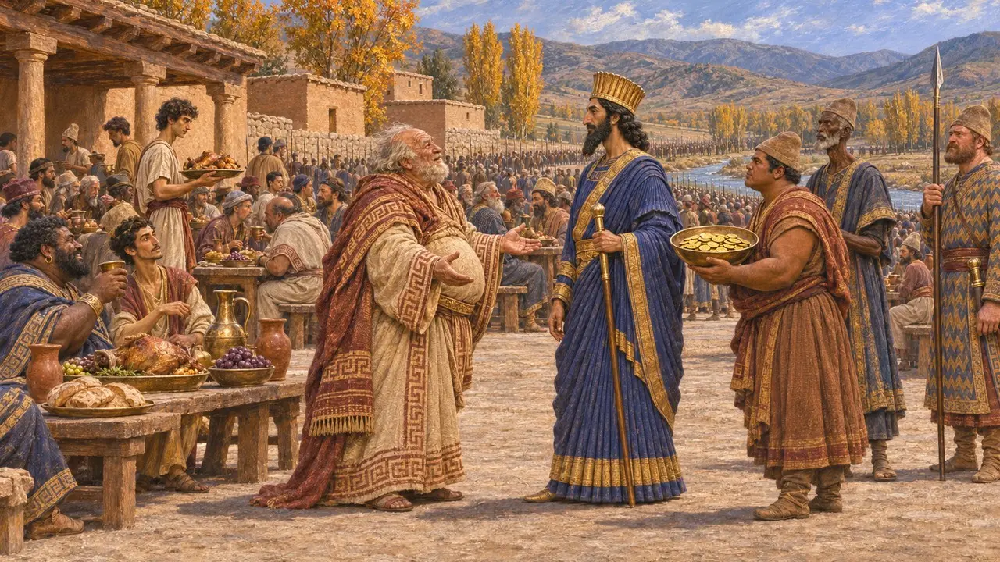
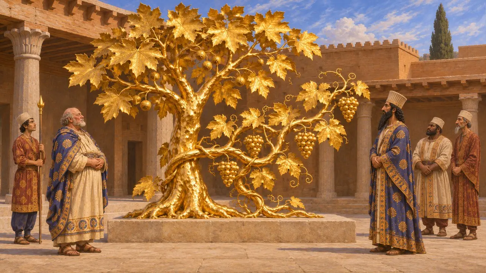

Pythius the Lydian
Wealthy Lydian host of Xerxes' army at Celaenae, about 481 BCE, known only from Herodotus
Pythius, son of Atys, was a Lydian whom Herodotus calls the richest man of his time after the King. He entertained Xerxes' army at Celaenae on its march towards Sardis and offered his wealth for the war. The stories about him are shaped as moral tales on wealth and royal power, and no document from the time mentions him.
In the game: The game names Pythius in the Chronicle and in event articles, and the Sardis mint entry calls him a Lydian who offered Xerxes vast wealth. He has no mechanic of his own.

Host of the army at Celaenae
Ancient accountHerodotus says that Pythius, son of Atys, received Xerxes and his whole army at Celaenae in Phrygia on the march to Sardis, probably in autumn 481. He says Pythius feasted them and offered money for the war. Herodotus names him as the richest man known after the King.
Herodotus 7.27
The offer and the King's reply
Ancient accountHerodotus reports that Pythius offered his silver and gold, saying he had enough to live on without them. Xerxes is said to have praised him and made him a guest-friend. Herodotus adds that Pythius's coin stood at a little under four million darics, and that the King supplied the missing sum himself. The figures are Herodotus's own and are not confirmed elsewhere.
Herodotus 7.28-29

The golden plane tree and vine
Ancient accountHerodotus has the Persians at Xerxes' side remember Pythius as the man who gave Darius a golden plane tree and a golden vine. The tale presents Pythius as a long-standing servant of the Persian court. It proves nothing about the size of his actual fortune.
Herodotus 7.27
The tale of the eldest son
Later legendHerodotus tells that Pythius later asked Xerxes to excuse his eldest son from service. Xerxes is said to have been enraged, had the son cut in two, and marched the army between the halves. The story works as a lesson on pride and the danger of testing a king. It is told in a moral shape, and no Persian source supports it.
Herodotus 7.38-39
Doubts about the story
DisputedHistorians generally accept that a rich Lydian notable may have hosted the army, since Sardis was the satrapal seat. They are more cautious about the huge sums and the killing of the son. Herodotus's Xerxes serves partly as a figure of arrogance, and the Persian view of such events is not preserved.
P. Briant, From Cyrus to Alexander, 2002
Sources
- Herodotus 7.27-29
- Herodotus 7.38-39
- P. Briant, From Cyrus to Alexander, 2002